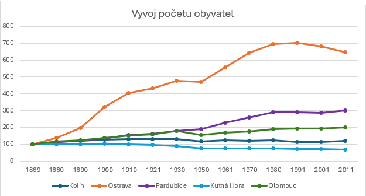
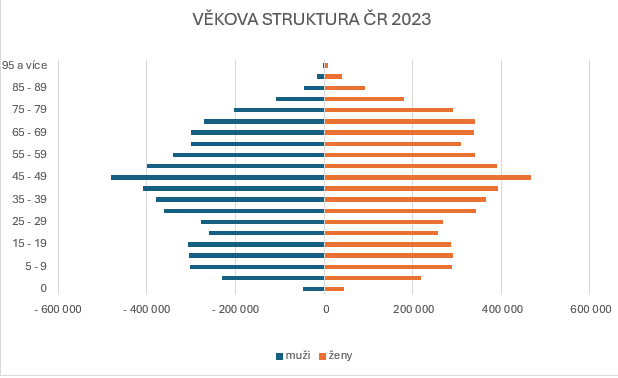
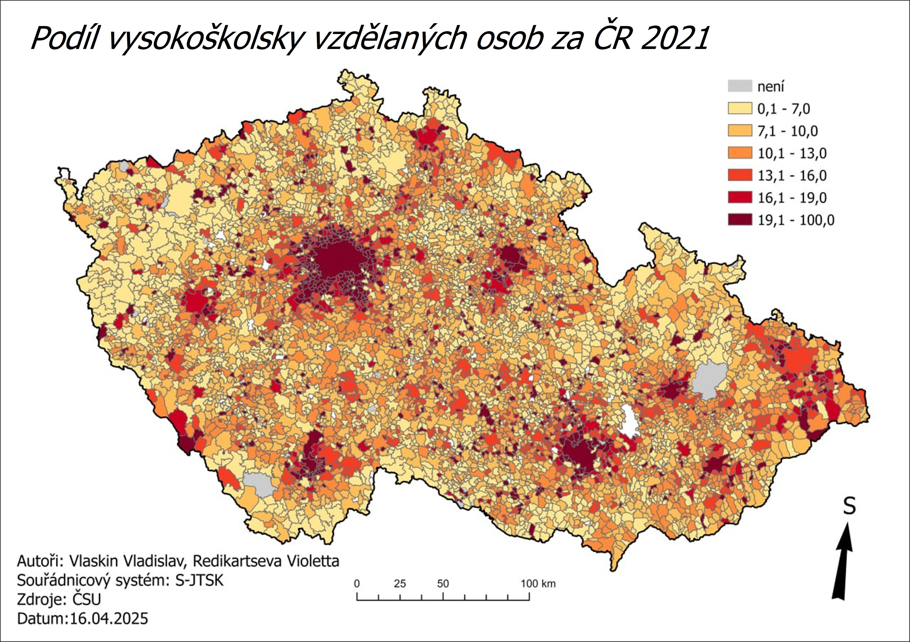

Obyvatelstvo
Co je Obyvatelstvo?
Obyvatelstvo je jedním ze základních témat socioekonomické geografie. Zkoumá se počet obyvatel, jejich rozložení, věková struktura, migrace, urbanizace a regionální rozdíly. Tyto faktory určují ekonomický vývoj, pracovní trh a celkovou dynamiku společnosti.
Vývoj počtu obyvatel
Graf ukazuje dlouhodobé změny v počtu obyvatel vybraných českých měst v období 1869–2011. Zatímco Ostrava zaznamenala výrazný růst díky industrializaci a stala se velkým městem, ostatní města – Kolín, Pardubice, Kutná Hora a Olomouc – rostla spíše pozvolně. Graf tak dobře ilustruje rozdíly mezi průmyslovými centry a méně dynamickými městy.

Jak ještě můžeme zobrazit data
Graf znázorňuje věkovou strukturu České republiky v roce 2023 formou populační pyramidy. Na levé straně jsou muži, na pravé ženy. Je dobře patrné stárnutí populace – nejsilnější jsou ročníky kolem 45–59 let, zatímco mladších věkových skupin postupně ubývá. Zároveň je vidět, že ve vyšším věku převažují ženy, což je typické pro většinu evropských zemí.
Muži
U mužů je patrné, že jejich počet je vyšší zejména v mladších věkových skupinách. Ve středním věku se počty mužů stabilizují, ale ve vyšším věku jejich počet rychle klesá. To odráží nižší průměrnou délku života mužů v porovnání se ženami.Ženy
Ženy mají podobné počty jako muži v mladších a středních věkových kategoriích, ale ve vyšším věku výrazně převažují. Je to způsobeno jejich delší délkou života a nižší úmrtností. Nejstarší věkové skupiny jsou tak tvořeny převážně ženami.
Jak lze vizualizovat socioekonomická data
Mapa ukazuje prostorové rozložení podílu vysokoškolsky vzdělaných obyvatel v České republice podle dat ze sčítání lidu 2021. Nejvyšší hodnoty jsou soustředěny zejména ve velkých městech a jejich zázemí, především v Praze, Brně, Plzni a Hradci Králové. Tyto oblasti se vyznačují vyšší koncentrací pracovních příležitostí v terciárním sektoru, vyšší životní úrovní a větší dostupností vysokoškolských institucí. Naopak venkovské a periferní regiony – zejména části Karlovarského, Ústeckého, Olomouckého a Zlínského kraje – mají podíl vysokoškolsky vzdělaných výrazně nižší. Mapa tak jasně ukazuje rozdíly mezi ekonomicky silnějšími centry a znevýhodněnými oblastmi, což je typické pro socioekonomickou geografii v ČR.
